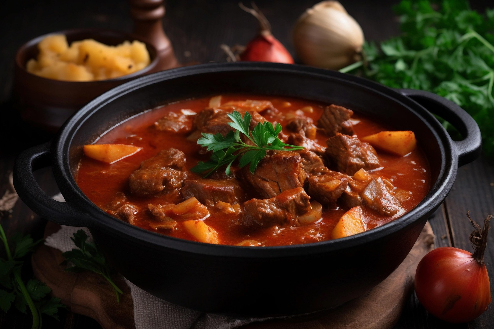

Saftiges Paprikagulasch
30 Min
normal
16.12.2025
- 500 g Rindfleisch
- 6 m.-große Zwiebel(n)
- 4 Knoblauchzehe(n)
- Rapsöl
- 1 EL Paprikapulver, edelsüßes
- 1 EL Paprikapulver, rosenscharfes
- 3 EL Tomatenmark
- 500 ml Rinderbrühe
- 3 Paprikaschote(n), rote
- 125 ml Rotwein, trockener
- 2 EL Kümmelsamen
Zubereitung
ca. 30 Min
2 Std. 30 Min. Gesamtzeit
Das gewürfelte Fleisch im Öl in einer großen Pfanne scharf von allen Seiten braun anbraten. Heraus nehmen und beiseitestellen.In der gleichen Pfanne die Zwiebeln mit dem Knoblauch anbraten, bis sie Farbe annehmen. Dann das Fleisch wieder dazugeben, mit dem Paprikapulver bestreuen, Tomatenmark zugeben und nochmals kurz durchrösten. Nun mit der Brühe ablöschen, den Kümmel zufügen und 1 1/2 Std. mit Deckel auf kleiner Hitze köcheln lassen. Danach die Paprikawürfel dazugeben und alles nochmal 20 Minuten köcheln lassen. Falls die Sauce zu sehr eingekocht ist, nochmal einen Schuss Wasser dazu geben. Bei Bedarf salzen. Dazu gibt es bei mir Salzkartoffeln und einen Schlag saure Sahne.
Rezept erstellt von
Jens